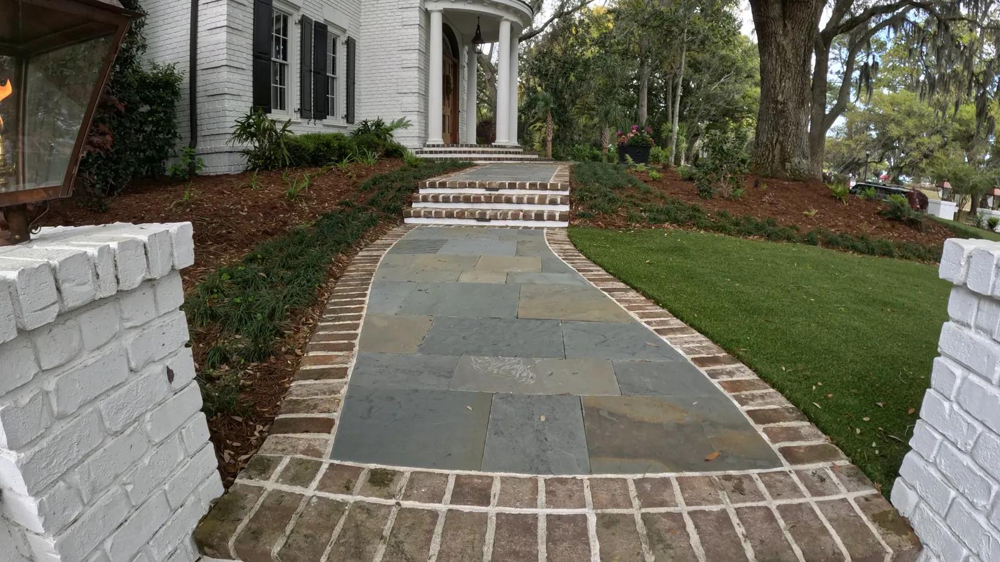
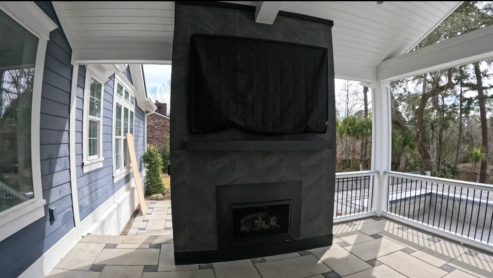

Family-owned in Summerville · Since 2016
Charleston Landscaping, Designed and Built by the Cramer Family
Custom landscapes, hardscapes and outdoor living for Lowcountry homes. Doug and Zach Cramer design every project themselves, and one of them is on your job every day until it is finished.
Our Story
The people who design your space are the same people who build it.
Doug Cramer has spent more than thirty years landscaping in the Lowcountry. In 2016 he opened Cramers Landscaping to focus on high-end residential work, and his son Zach, who grew up in the business and holds a builder’s license, runs every job alongside him.
- Custom design, not production builds. We spend real time learning how you want to live outside, and classical proportions guide every pergola, pavilion and outdoor kitchen.
- You work directly with Doug and Zach. No hand-off to a salesperson. The person who answers the phone knows your project.
- Built to last. Licensed and insured, with a one-year workmanship warranty and a warranty on plants.
Our family name is on every project we build.
What We Do
Outdoor spaces made for Lowcountry living
From a single garden bed to a full backyard with a pavilion, kitchen and pool deck, we design and build it in-house.

Landscape Installation
Plantings and bed layouts chosen for Lowcountry soil, salt air and summer heat.
Learn more →
Hardscaping
Patios, walkways, walls and steps in brick, tabby, bluestone and pavers.
Learn more →
Outdoor Structures
Pergolas, pavilions, cabanas and outdoor kitchens proportioned to the house.
Learn more →
Landscape Design
Designs drawn by Doug and Zach around how you actually use your yard.
Learn more →Also: Irrigation Drainage & grading Lighting Outdoor kitchens Fireplaces Maintenance
Recent Work
Craftsmanship you can see
Patios, kitchens, fire features and gardens we have designed and built for homeowners across the Lowcountry.





How We Work
One family, start to finish
Site visit
Doug or Zach walks the property with you and listens to how you want to use it, your budget and your timeline.
Custom design
We draw a plan fitted to your house, your soil and drainage, and the way Lowcountry weather treats a yard.
Build
Our own crew builds it, with a Cramer on site every day and the work done right below the surface as well as on top.
Care after
A one-year workmanship warranty, a plant warranty, and maintenance if you want us to keep it looking its best.
Kind Words
What our clients say
“Thorough, attentive to detail, anticipate issues, and an overall very pleasant experience to work with. I am a repeat customer and will continue to work with Doug Cramer and his crew. Excellent work and customer service.”
“Great work did our fence, landscaping, and sprinkler system. Very professional.”
“I absolutely love my fireplace. It's gorgeous! It completed the outdoor space and made it feel like a cozy room!”
“Doug Cramer and his crew helped us design and remodel our downtown Charleston patio and garden. This included new tabby hardscape, lighting, drainage, fencing, irrigation, and landscaping. Doug and his crew did an outstanding job and my wife, and I are now thoroughly enjoying this remarkable makeover.”
“I cannot say enough about Doug, Zack and Giovanni of Cramer Landscaping. They built and completed a beautiful pool cabana for us… Their work is top quality and their work ethic just as wonderful. I would highly recommend them and their work.”
“It was such a great pleasure to be working with Cramers Landscaping company. Zach and company did an amazing job with my backyard. Such a reliable, knowledgeable, trustworthy and hardworking people. Highly recommended!”
“Cramers Landscaping did such an amazing job! They were very easy to work with.”
Where We Work
Charleston and the surrounding Lowcountry
Cramers Landscaping proudly serves homeowners and businesses throughout Charleston County and beyond. Our primary service areas include:
- Charleston Landscape Design & Build
- Folly Beach Coastal & Rental Landscapes
- Kiawah Island Estate Landscaping
- Isle of Palms Salt-Air Landscaping
- Mount Pleasant Landscapes & Hardscapes
- Sullivans Island Coastal Landscapes
- North Charleston Landscaping & Drainage
- Summerville Family Yards & Patios
- West Ashley Drainage & Yard Upgrades
- Johns Island Custom Landscapes
Get in Touch
LetGet in Touch
Ready to Transform Your Landscape?
rsquo;s talk about your yard
If you’re searching for a landscaping company in Charleston that delivers expertise, reliability, and long-term value, Cramers Landscaping is here to help. We offer free consultations and custom project quotes tailored to your needs.
Location
9153 Markleys Grove Blvd, Summerville, SC
Phone
Hours
Monday – Friday: 8:00 AM – 5:00 PM
Saturday: 9:00 AM – 2:00 PM
Sunday: Closed
Get in Touch
Ready to Transform Your Landscape?
rsquo;s talk about your yardIf you’re searching for a landscaping company in Charleston that delivers expertise, reliability, and long-term value, Cramers Landscaping is here to help. We offer free consultations and custom project quotes tailored to your needs.
Location
9153 Markleys Grove Blvd, Summerville, SC
Phone
Hours
Monday – Friday: 8:00 AM – 5:00 PM
Saturday: 9:00 AM – 2:00 PM
Sunday: Closed